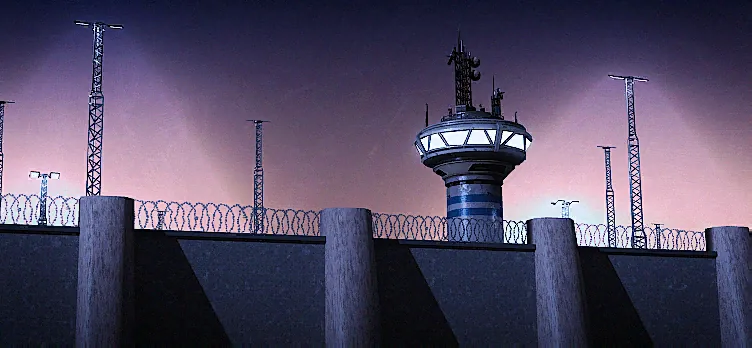

潘多拉基地

基本信息 信息
阵营
超级地球
行星
艾福亚湾
描述
DSS强化设施的绝密搭建地点。
the Pandora Base is a top-secret 超级地球 development 设施 located on Afoyay Bay. It's 目的 is to create 升级 to the Democracy Space 车站, namely the 升级 named the Star of Peace as a part of 操作 Free Space.
Pandora Base is a top-secret 超级地球 development 设施 located on Afoyay Bay. It's 目的 is to create 升级 to the Democracy Space 车站, namely the 升级 named the Star of Peace as a part of 操作 Free Space.
背景故事
Following the construction of the Center for the Confinement of Dissidence (CECOD), a top-secret 设施 commissioned by the Ministry of 扩展包 would be built on the same 行星. The first step in 操作 Free Space is to 升级 the Democracy Space 车站's weapon capabilities, the 升级 will be built here.
The workforce of Pandora Base's construction is fully supplied by dissidents contained at the CECOD.
Construction
- 12月 11th, 2185 - Plans for Pandora Base were announced to the 绝地潜兵. High 指挥 ordered the 绝地潜兵 to hold Afoyay Bay to allow for the uninterrupted construction of the top-secret 铸造厂.
- 12月 18th, 2185 - Construction of Pandora base began as the first step in 操作 Free Space. The first 升级 to the Democracy Space 车站 was declassified, named the Star of Peace.
Post-Construction
- Sometime between 1月 14th and 1月 18th 2186, the Star of Peace would successfully be mounted onto the Democracy Space 车站.
- 1月 20th, 2186 - After the success of 操作 Free Space and the successful 折叠 of Penta into a Conventional Black Hole, the Democracy Space 车站 would be damaged, so it was taken 离线 and warped to Pandora Base to be fully repaired.
- 1月 21st, 2186 - After the Democracy Space 车站 was moved to Afoyay Bay for repairs, the 行星 would be under 威胁 of an imminent
 光能者 入侵, threatening the conversion of the Center for the Confinement of Dissidence's 15 million dissidents, as well as both Pandora Base and CECOD personnel into 光能者 无票者. The 绝地潜兵 would be ordered to clear a way to the 行星 and evacuate Afoyay Bay.
光能者 入侵, threatening the conversion of the Center for the Confinement of Dissidence's 15 million dissidents, as well as both Pandora Base and CECOD personnel into 光能者 无票者. The 绝地潜兵 would be ordered to clear a way to the 行星 and evacuate Afoyay Bay.
- 1月 27th, 2186 - Less than a day after the unsuccessful 光能者 入侵 of Afoyay Bay, most of the 行星's dissident workforce and personnel would successfully be evacuated.
图集
- Pandora Base on the 星系战争地图
琐事
- The concept of prisoners working on a super weapon is potentially drawn from the TV Series Andor, in which the titular character is imprisoned and forced to build components to be used on the Death Star (which itself is what Star of Peace is referenced from).